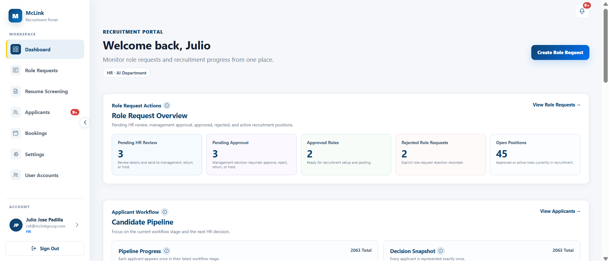
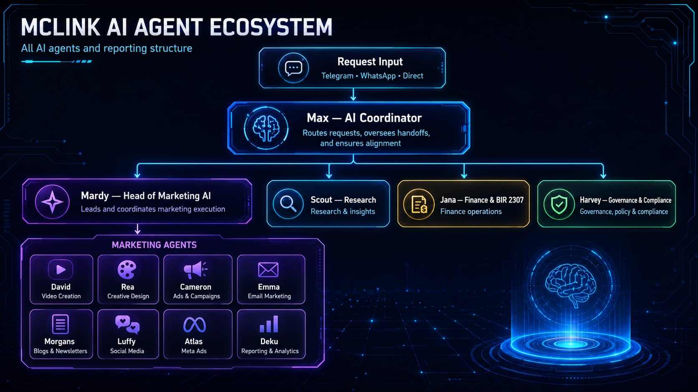
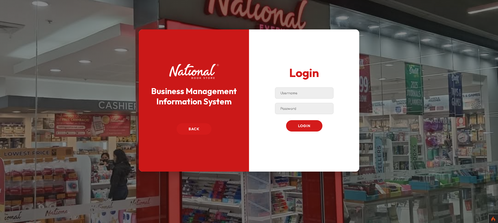
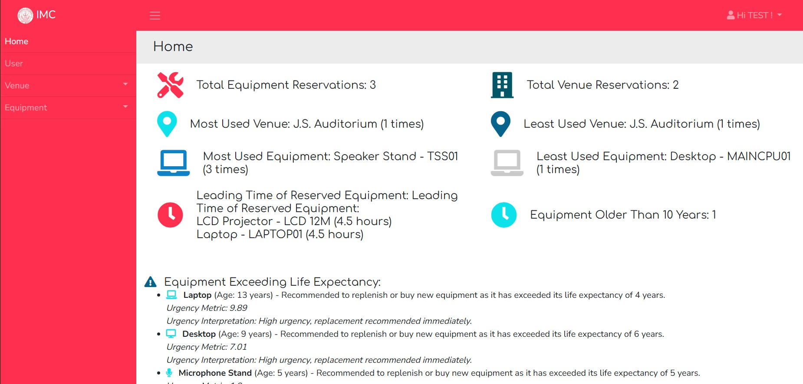

Antipolo, PhilippinesAvailable for smart collaborations
PiyuAI assistant / ready when called
Hi! I am Piyu. Ask me about the systems I build.
Ask about projects, automation, or AI.
Scroll to see the work
01 / About the builder
I turn complex systems into clear momentum.
I’m Julio, an AI engineer and automation builder who turns messy operations into calm, capable products people can actually use.
My work spans PostgreSQL-backed systems, full-stack JavaScript products, agent orchestration, API integrations, and AI-assisted delivery. I focus on the handoff between intelligence and action: systems that explain themselves, keep humans in control, and move from idea to useful release.
BasedAntipolo, Philippines
DegreeBS Information Technology
Current modeBuilding + shipping
02 / What I build
Useful systems, with a pulse.
From the first messy brief to the handoff that keeps a team moving, I build the connective tissue between people, data, and action.
01 / Build
Full-stack engineering
Calm product surfaces backed by dependable APIs, data models, and deployment paths.
Next.js + React
TypeScript + JavaScript
PostgreSQL-backed products
02 / Think
AI solutions
Human-readable AI experiences that make intelligence useful without hiding the controls.
Agent orchestration
LLM and API integration
Human-in-the-loop design
03 / Connect
Workflow automation
Messy handoffs turned into visible, reviewable flows that save time without losing judgment.
n8n + webhooks
Meta and Brevo systems
Approval and access controls
04 / Shape
Interface craft
Bright, responsive interfaces that give complex systems a sense of direction and delight.
Responsive web design
WordPress + Bricks CMS
Motion and interaction polish
01 Agentic AI02 API orchestration03 Human-in-the-loop04 Full-stack delivery
03 / Work + projects
Quiet interfaces. Busy systems.
I work on the layer where a business problem becomes a reliable workflow: research, orchestration, APIs, approvals, and the product surface people actually use.
03 / Work + projectsChoose a card to inspect

McLink / recruitment portal
01AI recruitment
Recruitment portal + AI voice interviews
Screening, voice interviews, and human approval points in one reviewable flow.
V
View case study ↻

McLink / AI agent ecosystem
02Agent ecosystems
OpenClaw multi-agent ecosystem
Marketing, analytics, research, content, security, and campaigns in one operating layer.
OC
View case study ↻
growth loop / campaign desk
+42%signal clarity
03Growth systems
Meta Ads automation and reporting
Connected campaign data, reporting, KPIs, and approval controls that keep growth decisions visible.
Inspect project ↻
publishing flow / ready
New campaign briefdraft → review → publishapproved
04Marketing automation
Lead generation and publishing
Research, leads, content, and publishing connected through focused automation agents.
Inspect project ↻
sales handoff / live
Quotation readyhuman approval
05Sales operations
Marketing-to-sales quotation flow
A connected path from lead signal to quotation forwarding, with review built into the handoff.
Inspect project ↻

NBS / branch management
06Internal systems
Branch Management Information System (NBS)
Multi-branch operations platform for reporting, branch records, role-based access, dashboards, and maintenance.
PHPJSCSS
View case study ↻

IMC / resource management
07Capstone
Instructional Media Center Management System
Web-based resource monitoring and allocation system with decision support for instructional media operations.
Inspect project ↻
ROAR / training solutions
08Client delivery
ROAR Training Solutions website
Full-stack WordPress delivery shaped with Bricks CMS and deployed to Hostinger for a real client.